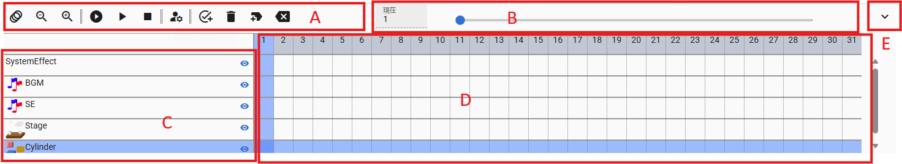
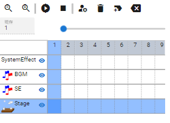
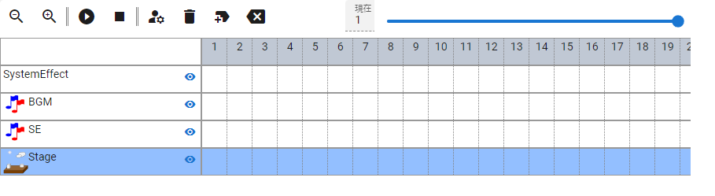

6.16. Timeline
It is a function under the WebGL screen. Used in animation.
6.16.1. Panel
- A Toolbar:
From left to right, they are arranged as follows:
Zoom out timeline
Zoom in timeline
Play at first
Play/Pause
Stop
Load this frame [1]
Open the current keyframe property
Register keyframe
Delete keyframe
Insert a blank frame to the current
Delete current frame index
- B Seek bar:
Move the current position of the frame to any location.
- C object/role name:
Displayed to identify the timeline.
- Show/Hide button
Hides the object from the WebGL view.
- Right click
Only 3D objects can have a context menu displayed by right-clicking.
- Information:
Displays the information screen only for VRoid/VRM.
- focus the camera:
Move the main camera so that this object is centered on the screen.
- reset all bones:
Reset pose back to T pose (default).
- D Timeline:
Displays keyframes for each object. You can switch the frame to operate by pressing the number at the top. The registered keyframes are filled in red. ** Register a child key ** and the number in the red cell part of the key frame is counted accordingly.
Double-click to open the keyframe settings window.
If you place the mouse cursor over a registered keyframe, you can check the current settings in a popup.

See Working with VRM IK markers for icons and their meanings.
- E Panel enlarge/reduce button:
Toggles between expanding and contracting the timeline panel (toolbar only).
6.16.1.1. Mobile viewing
Portrait |
Landscape |
|---|---|
 |
 |
Note
For mobile viewing,
Play/PauseandRegister Keyframeare located in the footer at the bottom of the main screen.For portraits, the toolbar is split into two lines.